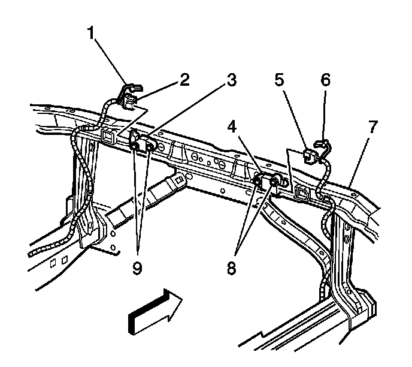

Inflatable Restraint Front End Sensor Replacement
Inflatable Restraint Front End Sensor Replacement
Removal Procedure
Caution: Do not strike or jolt the inflatable restraint front end sensor. Before applying power to the front end sensor make sure that it is securely fastened. Failure to observe the correct installation procedure could cause SIR deployment, personal injury, or unnecessary SIR system repairs.
Caution: Refer to SIR Caution (SIR Caution) .
1. Disable the SIR system. Refer to SIR Disabling and Enabling (Service and Repair) .

2. Remove the connector position assurance (CPA) (1, 6) from the wiring harness connector to the inflatable restraint front end sensor (3, 4).
3. Disconnect the wiring harness connector (2, 5) from the front end sensor (3, 4).
Important: The front end sensor mounting fastener (8, 9) has left handed threads.
4. Loosen the front end sensor mounting fastener (8, 9), which is located in the upper tie bar.
5. Remove the front end sensor (3, 4) from the upper tie bar.
Installation Procedure
1. Remove any dirt, grease, or other impurities from the mounting surface (7).
2. Position the sensor (3, 4) horizontally on the mounting surface.
3. Point the arrow on the sensor toward the front of the vehicle.
Notice: Refer to Fastener Notice .
4. Install the mounting fasteners (8, 9).
Tighten the fastener (1) to 9 N.m (80 lb in).
5. Connect the harness wiring connector (2, 5) to the front end sensor (3, 4).
6. Install the CPA (1,6) to the wiring harness connector on the front end sensor.
7. Enable the SIR system. Refer to SIR Disabling and Enabling (Service and Repair) .